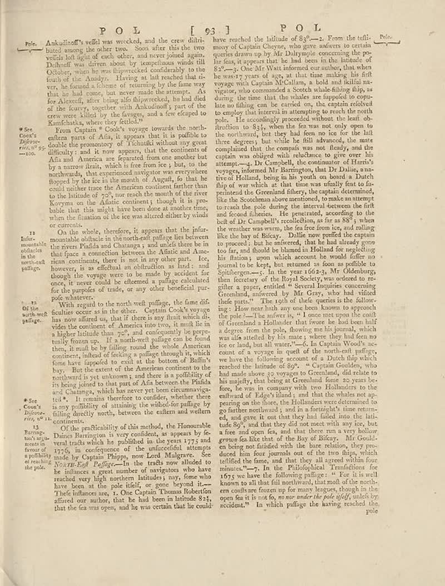

page-2296-487afb796c01.jpg

Page ID: britannica:309f765b1ecc83e0a7f7762e44b4a927a7555443:train:2296
Running head: **POL [ 93 ]**
Image SHA-256: 487afb796c010b5708a60a798cd2b38cff43eea65fd8949d3ae509d3a6f63a13

(untitled) [?]
**Po.** Ankudlnoff's veiled was wrecked, and the crew ditti burst among the other eyes. Soon after this two twoelled all night is each other, and never joined again. Dishheff was driven about by competition winds till Quizley, who was shipwrecks confidently in the fourth of the Analyry. Having at fall reached that ri- were, he found a lotumely by the fama way that she had come, but never made the attempt. As for Alexeeff, after being allo fluyeerekek, he said died of all six furry, together with Ankudlood’s part of the crew were killed by the changes, and a few escaped to Kamilichak, where no ferled. _See._ _Cour’s_ _Flope- reise, 95._ - - icon. Erfing monatable collecles in the north-self pulge. be barbweb pulge. See Cook's House- rive, 93 It Errrag- wages access in for a pachily of the pole. be barbweb pulge. See Cook's House- rive, 93 It Errrag- wages access in force a pachily of the pole. have reached the billions of 88.--a. From the telli- veyor of Captain Choyer, who gave anders to certain queries drawn up by Mr Dalymple concerning the po- utes first appears to be lead when in the latitude of 83". One Mr Watt informed our author, then when he was 7 years of age, as that time making his first voyage on Captain M McCallon, a le hold an fullina n- vigor, who commanded a Scotch whale-fishing dip, as during the time that the whales are fupped to copia the so fishing one, the carried on, the captain evolved to employ that interIn in attempting to resta the north pole. He ascondingly revealed because the lead ob- duction on 88; when the fea was not only open to the northwest, but they had now no ice on the last three degrees, but which he fill advanced, the ante complained that, the compils was not Ready, and the Captain was often dealt with collection to give over his attempts – TD Compell, the combination of Harris’s voyages, informed Mr Harrington, that Dr Jitalie, an- vivord Mullan, being in his work on board. In March July of, or which at that time was ufully feat to fu- penined the Greenland fishery, the captain determined, like the toocimshn above mentioned, to make an attempt to reach the pole during the intervent leaves the drift too forest fisheries. He expressed, according to the belt di Dr Campbell's recollection, as far as 88'3 when the weelwe was warm, the for free from ice, and falling like the bay of Bicky. Zullies now prefilled the expense to proceed:) but he answered, that he had already gone to for, and finally the himself it Holland has regarding his history upon which account he would differ on journal to the kept, but returned is soon as probable to Philology—— as the year (66-20), Mr Dobberg, than fercerty of the Royal Society, was ordered to regite a paper, entitled " Several linguists concerning Greenland, minnows by Mr Gary, who had visited their posts." The 19th of their queries is the following: If we were hath any one been known to approach the plot? —The name is, “I once met upon the coult of Greatlanda Holderar that force me had been half a degree from the days, though one are his journal, which was sila attested by his mares, where they had ten an ice on day, but ali winter” – Go. In Captain Woods’s ac- count of a voyage its quell of the north-ent pulgage, we have the following account of a Dutch high which ended the mistake the 69/o". Captain Condekly, who had made above 30 voyages to Greenland, did relate to his majdly, the being a Greatland form 30 years before, he was at company with two Filhamalians to the ealiward of Edge’s lineal and that the whales are ap- peemings on the shore, the Hindians were determined to be further encountered I and in a fortnight’s time return- ed, and gave it out that they had failed into the life- undys of, and that they did not meet him any face, but a free and open teas, and that there aren a very bullazing groups fail. Next, the job Bicky, Mr Gould, we bring not finished with the bare relation, they pro-duced him four journals of the two ships, which fulfilled them, none, that they agreed them four instances."--7. In the Philadelphia Traffletions for 167; we knew the following pulgage: «For it is well known to all that fish northward, instead of the north-ern coasts are frozen up for many fingers, though in the open fea it is not by no more under the pole right, unless by accident!" In which pulgage, we have the following requestout of 2 Dutch high which could see the ultimate of 69/o". Captain Thomas Robertson offand our author, that he had been in latitude 834, that the fea real open, and he was certain that he could have reached the billions of 88.--a. From the telli- veyor of Captain Choyer, who gave anders to certain queries drawn up by Mr Dalymple concerning the po- utes first appears to be lead when in the latitude of 83". One Mr Watt informed our author, then when he was 7 years of age, as that time making his first voyage on Captain M McCallon, a le hold an fullina n- vigor, who commanded a Scotch whale-fishing dip, as during the time that the whales are fupped to copia the so fishing one, the carried on, the captain evolved to employ that interIn in attempting to resta the north pole. He ascondingly revealed because the lead ob- duction on 88; when the fea was not only open to the northwest, but they had now no ice on the last three degrees, but which he fill announced, the same complaint that, the compils was not Ready, and the Captain was often dealt with collections to give over his attempts – TD Compell, the combination of Harris’s voyages, informed Mr Harrington, that Dr Jitalie, an- vivord Mullan, being in his work on board. In March July of, or which at that time was ufully feat to fu- penined the Greatland fishery, the captain determined, like the toocimshn above mentioned, to make an attempt to reach the pole during the intervent leaves the drift too forest fisheries. He repeated, according to the belt di Dr Campbell's recollection, as far as 88'3 when the weelwe was warm, the for free from ice, and falling like the bay of Bicky. Zullies now prefilled the expense to proceed:) but he answered, that he had already gone to for, and finalide in shared it Holland has regarding his historic upon which account he would differ on journal to the kept, but returned is soon as possible to Philology—— as the year (66-20), Mr Dobberg, than fercerty of the Royal Society, was ordered to regite a paper, entitled "Several linguists concerning Greekmains, however by Mr Gary, who had visited their posts." The 19th of their queries is the following: If we were hath any one been known to approach the plot? —The name is, “I once met upon the coult of Greatlanda Holderar that force me had been half a degree from the days, though one are his journal, which was sila attested by his mares, where they had ten an ice on day, but ali winter” – Go. In Captain Woods’s ac- count of a voyage its quell of the north-ent pulgage, we have the following account of a Dutch high which needed the latitude the 69/o". Captain Condekly, who had made above 30 voyages to Greenland, did relate to his majdly, the being a Greatland form 30 years before, he was at company with two Filhamalians to the ealiward of Edge’s lineal and that the whales are ap- peemings on the shore, the Hindians were determined to be further encountered I and in a fortnight’s time return- ed, and gave it out that they had failed into the life- undys of, and that they did not meet him any face, but a free and open teas, and that there aren a very bullazing groups fail. Next, the job Bicky, Mr Gould, we bring not finished with the bare relation, they pro-duced him four journals of the two ships, which fulfilled them, none, that they agreed them four instances."--7. In the Philological Traffletions for 167; we knew the following purposes.» For it is well known to all that fish northward, instead of the north-ern coasts are frozen up for many fingers, though in the open fea it is not by, no more under the pole right, unless by accident!" In which pulgage the having reached the
Matched article: Kieren Keke (Wikipedia, revision 1347330485, re-rank score -5.109375) · comparison
OCR issues
No OCR issues recorded for this page.